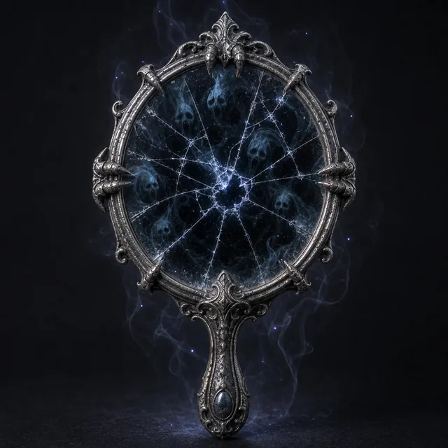

Предмет · undefined · №2
Существо, заглянувшее в это зеркало, видит невыразимые ужасы и привязывается к объекту. Эта карта навсегда добавляется в вашу Руку, пока проклятие не будет снято, заменяя одну из карт, и Мастер получает Страх. Проклятие: Один раз за продолжительный отдых вы должны заглянуть в зеркало, чтобы увидеть ужасные, невыразимые варианты будущего или события. При этом совершите Бросок Реакции на Влияние (18). При провале до следующего отдыха вы имеете помеху на любые броски Влияния, Мастер получает Страх, и вы отмечаете Стресс. При успехе до следующего отдыха вы добавляете Мастерство ко всем броскам Влияния, можете обнаруживать ложь и видеть сквозь любые иллюзии.
Открыть в генераторе лута